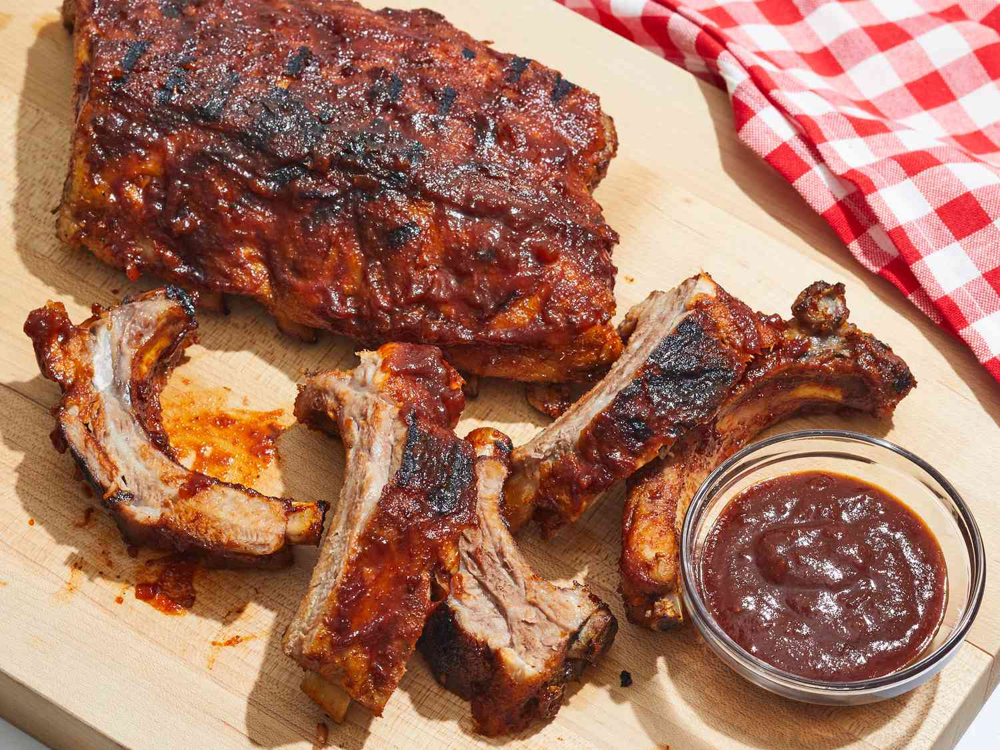

Lasagne is actually a form of pasta itself. It is a traditional Italian dish made with layers of pasta, meat or vegetables, and cheese, typically served with a tomato-based sauce. Lasagne can even be made with different types of pasta, including traditional pasta sheets, fresh egg noodles, penne, or even ravioli.

A hamburger, or simply burger, is a sandwich consisting of fillings—usually a patty of ground meat, typically beef—placed inside a sliced bun or bread roll.

Ribs are a cut of pork (or beef, etc.) from the loin or side between the shoulder and back legs. Pork ribs come in three basic cuts back ribs, spare ribs, and country-style ribs depending on the section of the hog where they originated. A special cut of spare ribs, formalized by the USDA as “Pork Ribs, St.